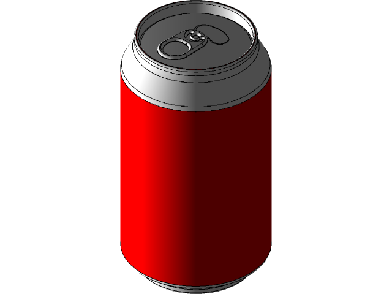

Una función \(f\) es una regla que asigna a cada elemento \(x\) en un conjunto \(D\) exactamente un elemento, llamado \(f(x)\), en un conjunto \(E\).
Una función es creciente en un intervalo \(I\) si \[ f(x_1) < f(x_2) \;\; con \; x_1 < x_2 \; en \; I \]
Una función es decreciente en un intervalo \(I\) si \[ f(x_1) > f(x_2) \;\; con \; x_1 < x_2 \; en \; I \]
Si el gráfico de \(f\) esta por encima de todas sus tangentes en un intervalo \(I\), entonces se dice cóncava hacia arriba en \(I\). Análogamente, si el gráfico de \(f\) está por debajo de de todas sus tangentes en \(I\) se dice cóncava hacia abajo en \(I\).
Un punto \(P\) en una curva \(y = f(x)\) se llama punto de inflexión, si \(f\) es continua en dicho punto y la curva pasa de un tipo de concavidad a otra en \(P\).
Una función \(f\) tiene un máximo absoluto en \(c\) si \(f(c) \ge f(x) \; \forall \; x\) en \(D\), donde \(D\) es el dominio de \(f\). El valor \(f(c)\) se llama valor máximo.
Análogamente, \(f\) tiene un mínimo absoluto en \(c\) si \(f(c) \le f(x) \; \forall \; x\) en \(D\) y el valor \(f(c)\) se llama valor mínimo.
Los valores máximos y mínimos de \(f\) se llaman valores extremos de \(f\).
Una función \(f\) tiene un máximo relativo en \(c\) si \(f(c) \ge f(x)\) cuando \(x\) está cerca de \(c\). [Esto significa que \(f(c) \ge f(x) \; \forall \; x\) en algún intervalo abierto que contiene a \(c\).]
Análogamente, \(f\) tiene un mínimo local en \(c\) si \(f(c) \le f(x)\) cuando \(x\) está cerca de \(c\).
Un punto crítico de una función \(f\) es un valor \(c\) en el dominio de \(f\) tal que o \(f'(c) = 0\) o \(f'(c)\) no existe.
Hallar las dimensiones de una lata de gaseosa cilíndrica con un volúmen fijo \(V\) que tiene la menor área superficial posible (de esta forma utilizando menos material y reduciendo los costos de manufactura).

Definamos \(r\) como el radio del cilindro y \(h\) como su altura. El volumen \(V\) es constante (fijo).
El área del cilindro es la suma del área de la tapa de arriba, la tapa de abajo y el área lateral. Esto es:
\[
A = superior + inferior + lateral
\]
Sabiendo que el área de un círculo es \(\pi r^2\) y el área lateral es \(2 \pi r h\)
\[ \begin{aligned} A & = \pi r^2 + \pi r^2 + 2 \pi r h \\ & = 2 \pi r^2 + 2 \pi r h \end{aligned} \]
El volúmen \(V\) de un cilindro es: \[ V = \pi r^2 * h \]
Entonces:
\[ h = \frac{V}{\pi r^2} \]
De este modo, podemos reemplazar esta expresión de \(h\) en la ecuación del área. \[ \begin{aligned} A & = 2 \pi r^2 + 2 \pi r (\frac{V}{\pi r^2}) \\ & = 2 \pi r^2 + \frac{2V}{r} \end{aligned} \]
Observando esto, podemos ver que el área está en función del radio \(r\). De modo que, podemos decir que el área es una función \(A(r)\)
\[ A(r) = 2 \pi r^2+ \frac{2V}{r} \]
Hay que tener en cuenta que \(r > 0\) (porque representa el radio), por ende \(A(r)\) tiene como dominio \(\mathbb{R_{>0}}\).
Además, la función no está definida en \(r = 0\)
Ahora tenemos la función que necesitamos minimizar.
Comenzaremos por hallar puntos críticos de la función. Derivando encontramos: \[ A'(r) = 4 \pi r - \frac{2V}{r^2} \]
Buscamos el valor \(r\) para el cual \(A'(r) = 0\)
\[ \begin{aligned} A'(r) &= 0 \\ \\ 4 \pi r - \frac{2V}{r^2} &= 0 \\ \\ 4 \pi r &= \frac{2V}{r^2} \\ \\ r^3 &= \frac{2V}{4 \pi} \\ \\ r^3 &= \frac{V}{2 \pi} \\ \\ r &= \sqrt[3]{\frac{V}{2 \pi}} \end{aligned} \]
Un punto crítico \(r_c\) para \(A(r)\) es \[ r_c = \sqrt[3]{\frac{V}{2 \pi}} \]
Ahora necesitamos confirmar que esto es un mínimo (relativo), y además que es el mínimo absoluto.
Sabemos por los cálculos anteriores que \(A'(r_c) = 0\), entonces nos interesa descubrir como se comporta \(A'(r)\) para valores de \(r\) tal que \(0 < r < r_c\) y para valores de \(r\) tal que \(r_c < r\).
Evaluando \(A'(r)\) en valores dentro de esos intervalos nos da los siguientes resultados:
| \(r\) | \(A'(r)\) | Comportamiento de \(A(r)\) |
|---|---|---|
| \(0 < r < r_c\) | \(< 0\) | Decrece |
| \(r_c\) | \(0\) | - |
| \(r_c < r\) | \(> 0\) | Crece |
Como la función pasa de tener un comportamiento decreciente a un comportamiento creciente podemos confirmar con seguridad de que \(r_c\) se trata de un mínimo relativo.
Finalmente, también es un mínimo absoluto en el intervalo (0, \(\infty\)), ya que es el menor valor en dicho intervalo.
Ya que estamos trabajando sobre un intervalo cerrado, podemos convencernos de lo anterior evaluando \(\lim_{r\to\infty} A(r) = \infty\) y \(\lim_{r\to0^+} A(r) = \infty\)
Recordemos que debemos encontrar todas las dimensiones que forman el cilíndro, ya conocemos el valor de \(r\) óptimo, ahora resta encontrar el valor de \(h\). Para ello, solo basta reemplazar \(r\) por \(r_c\) en la expresión encontrada previamente para \(h\): \[ \begin{aligned} h &= \frac{V}{\pi r^2} \\ \\ &= \frac{V}{\pi (\sqrt[3]{\frac{V}{2 \pi}})^2} \\ \\ &= \frac{V (\sqrt[3]{2 \pi})^2}{\pi (\sqrt[3]{V})^2} \\ \\ &= \frac{V}{\sqrt[3]{V^2}} \cdot \frac{\sqrt[3]{4 \pi^2}}{\pi} \\ \\ &= \sqrt[3]{\frac{V^3}{V^2}} \cdot \sqrt[3]{\frac{4 \pi^2}{\pi^3}} \\ \\ h &= \sqrt[3]{\frac{4V}{\pi}} \end{aligned} \]
Con esto ya tenemos todas las dimensiones del cilíndro \(h\) y \(r\).
Es interesante notar que: \[ \begin{aligned} \frac{h}{r} &= \sqrt[3]{\frac{4V \cdot 2\pi}{\pi \cdot V}} \\ \\ &= \sqrt[3]{8} = 2 \end{aligned} \]
Lo que implica que la altura es 2 veces el radio (\(h = 2r\)). Dicho de otra manera, la altura debe ser igual que el diámetro.
Esto resulta en una lata cilíndrica con forma “cúbica”